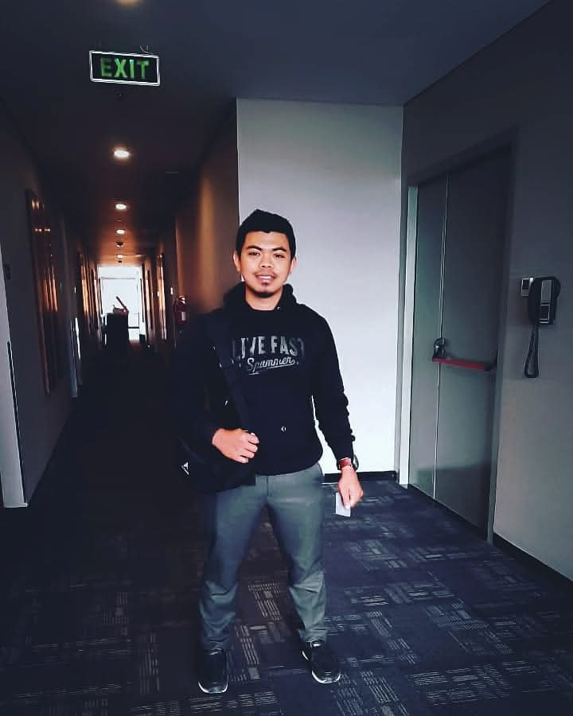

Portofolio Terpilih
Maintenance
Data Center Project

Security
Muhammad Cahyono, M.Kom. Expert dalam arsitektur jaringan, manajemen server, dan pemulihan sistem kritikal.

Optimasi dan pemeliharaan data center dengan standar ketersediaan tinggi.
Arsitektur jaringan aman dengan perlindungan firewall tingkat lanjut.
Solusi perbaikan hardware dan software untuk mendukung produktivitas.